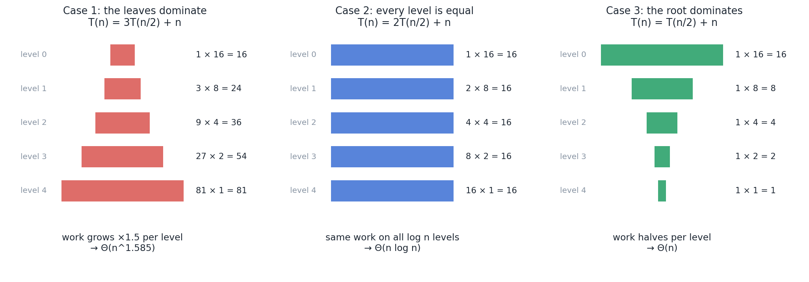
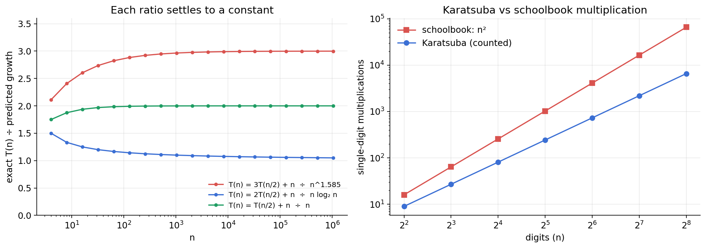

Recursive algorithms are easy to write and awkward to time. A loop that runs n times is obviously Θ(n). But what about a function that calls itself three times on half the input and then does a linear amount of tidying up? You cannot just count the lines.
The Master Theorem is the shortcut for exactly this situation. It looks like three formulas to memorise, which is how most people meet it, and why most people dislike it. It is really one question: where does the work pile up, at the top of the recursion, at the bottom, or evenly throughout?
In this post I build the theorem from that question, use it on real algorithms, check its predictions by brute force, and show where it stops working.
01From an algorithm to a recurrence
A divide-and-conquer algorithm does three things: it splits the problem into smaller pieces, solves each piece recursively, and combines the results. Its running time has the same shape:
T(n) = a · T(n / b) + f(n)
- a is how many subproblems it creates.
- n / b is the size of each one.
- f(n) is the work done outside the recursive calls: splitting and combining.
Merge sort makes 2 calls on halves and merges in linear time: T(n) = 2T(n/2) + n. Binary search makes 1 call on a half and does constant work: T(n) = T(n/2) + 1. This equation is called a recurrence, and "solving" it means finding a formula without T on the right-hand side.
02The recursion tree: one picture, three outcomes
Draw the calls as a tree. The root does f(n) work. It has a children, each doing f(n/b). Each of those has a children, and so on, for log_b n levels until the pieces reach size 1.
Now add up the work on each level and ask how it changes as you go down.

- Left: the work grows as you go down. There are so many subproblems that the bottom level outweighs everything above it. The total is decided by the leaves.
- Middle: every level does the same work. The total is that amount multiplied by the number of levels.
- Right: the work shrinks as you go down. The top level outweighs everything below it. The total is decided by the root.
That is the entire Master Theorem. The three "cases" are these three shapes.
03The theorem
How many leaves are there? The tree has log_b n levels and multiplies by a at each one, giving a^(log_b n) leaves, which is the same number as n^(log_b a). Call that exponent the critical exponent, c = log_b a. The theorem compares f(n) with n^c.
| Case | Condition | Shape | Result |
|---|---|---|---|
| 1 | f(n) grows polynomially slower than n^c | Leaves dominate | T(n) = Θ(n^c) |
| 2 | f(n) grows at the same rate as n^c | All levels equal | T(n) = Θ(n^c · log n) |
| 3 | f(n) grows polynomially faster than n^c | Root dominates | T(n) = Θ(f(n)) |
"Polynomially" matters: the gap has to be a factor of n^ε for some ε > 0, not just a logarithm. Case 3 also needs a mild regularity condition, a · f(n/b) ≤ k · f(n) for some constant k < 1, which holds for every ordinary polynomial f.
04A procedure for using it
SOLVE-RECURRENCE(a, b, f) // T(n) = a·T(n/b) + f(n)
c = log_b(a) // critical exponent
compare f(n) with n^c:
if f(n) = O(n^(c − ε)) for some ε > 0:
return Θ(n^c) // Case 1: leaves win
if f(n) = Θ(n^c):
return Θ(n^c · log n) // Case 2: tie
if f(n) = Ω(n^(c + ε)) for some ε > 0
and a·f(n/b) ≤ k·f(n) for some k < 1:
return Θ(f(n)) // Case 3: root wins
otherwise:
the theorem does not apply; draw the recursion tree
In practice it is three steps: read off a, b and f; compute c = log_b a; compare.
05Worked examples
Binary search: T(n) = T(n/2) + 1. a = 1, b = 2, so c = log₂1 = 0 and n^c = 1. f(n) = 1 matches exactly. Case 2: T(n) = Θ(n⁰ · log n) = Θ(log n).
Merge sort: T(n) = 2T(n/2) + n. a = 2, b = 2, so c = 1 and n^c = n. f(n) = n matches. Case 2: Θ(n log n).
T(n) = 3T(n/2) + n. a = 3, b = 2, so c = log₂3 ≈ 1.585. f(n) = n grows slower than n^1.585. Case 1: Θ(n^1.585).
It is worth doing this one by hand with the tree, to see the theorem is not magic. Level i has 3^i subproblems, each of size n/2^i, so the level does n · (3/2)^i work. That is a geometric series growing by a factor of 1.5, so its sum is dominated by its last term. The last level is i = log₂n, where the work is n · (3/2)^(log₂n) = 3^(log₂n) = n^(log₂3). Same answer.
T(n) = T(n/2) + n. a = 1, b = 2, so c = 0 and n^c = 1. f(n) = n grows much faster. Regularity: f(n/2) = n/2 ≤ ½ · n. Case 3: Θ(n). By hand: n + n/2 + n/4 + … is less than 2n.
More results from the same three steps:
| Recurrence | Where it comes from | a, b | n^c | Case | T(n) |
|---|---|---|---|---|---|
| T(n/2) + 1 | Binary search | 1, 2 | 1 | 2 | Θ(log n) |
| 2T(n/2) + n | Merge sort | 2, 2 | n | 2 | Θ(n log n) |
| 3T(n/2) + n | Karatsuba multiplication | 3, 2 | n^1.585 | 1 | Θ(n^1.585) |
| 8T(n/2) + n² | Simple divide-and-conquer matrix multiplication | 8, 2 | n³ | 1 | Θ(n³) |
| 7T(n/2) + n² | Strassen's matrix multiplication | 7, 2 | n^2.807 | 1 | Θ(n^2.807) |
| 4T(n/2) + n² | – | 4, 2 | n² | 2 | Θ(n² log n) |
| 2T(n/2) + n² | – | 2, 2 | n | 3 | Θ(n²) |
Look at the two matrix rows. Strassen's whole contribution was finding a way to use 7 recursive multiplications instead of 8. That one change moves the critical exponent from 3 to 2.807. When the leaves dominate, reducing the number of subproblems is the only thing that helps; making the combine step faster would change nothing.
06A real case: Karatsuba multiplication
Multiplying two n-digit numbers the school way takes n² single-digit multiplications. Split each number in half instead:
x = a · 10^h + b y = c · 10^h + d (h = n/2)
x · y = ac · 10^(2h) + (ad + bc) · 10^h + bd
That needs four half-size products: ac, ad, bc and bd. The recurrence is T(n) = 4T(n/2) + n, and the Master Theorem gives Θ(n²). No improvement.
In 1960 Anatoly Karatsuba, then a 23-year-old student, noticed that the middle term can be had from one product instead of two:
ad + bc = (a + b)(c + d) − ac − bd
Since ac and bd are needed anyway, the whole thing takes three half-size multiplications:
KARATSUBA(x, y, n)
if n == 1: return x · y
h = n / 2
split x into a, b and y into c, d
P1 = KARATSUBA(a, c, h)
P2 = KARATSUBA(b, d, h)
P3 = KARATSUBA(a + b, c + d, h)
return P1 · 10^(2h) + (P3 − P1 − P2) · 10^h + P2
T(n) = 3T(n/2) + n, which is Case 1: Θ(n^1.585). Shortly before, Kolmogorov had conjectured that n² was the best possible. This algorithm disproved it.
07Checking the theorem by brute force
The Master Theorem makes predictions, so they can be tested. I did two experiments.
Experiment 1: evaluate the recurrences exactly. I computed T(n) for the three recurrences in Figure 1, with T(1) = 1, up to n = 1,048,576, and divided by the predicted growth. If the theorem is right, each ratio should level off at a constant.
| n | 3T(n/2) + n ÷ n^1.585 | 2T(n/2) + n ÷ n·log₂n | T(n/2) + n ÷ n |
|---|---|---|---|
| 16 | 2.605 | 1.250 | 1.938 |
| 256 | 2.922 | 1.125 | 1.996 |
| 4,096 | 2.985 | 1.083 | 2.000 |
| 65,536 | 2.997 | 1.062 | 2.000 |
| 1,048,576 | 2.999 | 1.050 | 2.000 |
All three flatten out, at 3, 1 and 2. Those constants are exactly what Θ hides: the theorem tells you the shape of the growth, not the multiplier.
Experiment 2: count Karatsuba's multiplications. I implemented Karatsuba, checked every product against Python's built-in multiplication, and counted the single-digit multiplications it performs.
| Digits | Schoolbook (n²) | Karatsuba (counted) | Saving |
|---|---|---|---|
| 4 | 16 | 9 | 1.8× |
| 16 | 256 | 81 | 3.2× |
| 64 | 4,096 | 729 | 5.6× |
| 256 | 65,536 | 6,561 | 10.0× |

The Karatsuba counts are exact powers of 3: 9, 81, 729, 6,561. That is 3^(log₂n), which is n^(log₂3), the number of leaves in the recursion tree. Every leaf is one single-digit multiplication, and the leaves dominate. Case 1, made visible.
08Space complexity
The Master Theorem is about time, but the same tree gives the space used by the call stack. Only one root-to-leaf path is active at any moment, so the stack depth is the height of the tree:
- Depth: log_b n frames, so Θ(log n) stack space for all the algorithms above.
- Plus working memory: merge sort also needs its Θ(n) buffer; binary search needs nothing extra. Written as a loop, binary search needs no stack at all.
A useful habit: time is the sum over the whole tree, stack space is the longest path through it.
09Where the theorem stops working
The Master Theorem only covers recurrences of one specific form. It says nothing when:
- The gap is only a logarithm. For T(n) = 2T(n/2) + n log n, f(n) is bigger than n but not polynomially bigger, so it falls between Case 2 and Case 3. Working the tree by hand gives Θ(n log² n).
- The subproblems are different sizes. T(n) = T(n/3) + T(2n/3) + n does not fit the form. A recursion tree shows each level costs at most n and there are Θ(log n) levels: Θ(n log n).
- The problem shrinks by subtraction, not division. T(n) = T(n − 1) + n is what insertion sort or a worst-case quicksort gives. It unrolls to n + (n − 1) + … + 1 = Θ(n²).
- a or b is not a constant, for example T(n) = n · T(n/2) + 1.
In every one of these cases the recursion tree still works. The theorem is a shortcut for the tree, not a replacement for it.
10Common mistakes worth watching for
- Comparing f(n) with n instead of with n^(log_b a). For T(n) = 4T(n/2) + n the comparison is n against n², not n against n.
- Forgetting the log in Case 2. A tie does not give Θ(n^c). It gives Θ(n^c log n).
- Applying it when the gap is not polynomial. n log n against n is not Case 3.
- Mixing up a and b. a counts the calls; b is how much smaller each one is. 2T(n/3) and 3T(n/2) are very different.
- Treating Θ as the whole story. Experiment 1 showed constants of 3, 1 and 2. For small inputs constants can matter more than the exponent, which is why real libraries switch from Karatsuba back to schoolbook multiplication below a certain size.
11Where this shows up in Umbra
This post has no game of its own, but two of the missions in Umbra, the browser game I built for this course, are these recurrences in disguise.
In Signal Lock, par is ⌊log₂n⌋ + 1 pings. That number is the solution of T(n) = T(n/2) + 1, and you can feel it when the remaining candidates halve after every good ping. In Convoy, the recursion tree of T(n) = 2T(n/2) + n is drawn on screen as you play, with every level holding all n pods: Case 2, as a picture.
12Summary
- A divide-and-conquer algorithm gives a recurrence T(n) = a·T(n/b) + f(n).
- The critical exponent c = log_b a counts the leaves: there are n^c of them.
- Compare f(n) with n^c. Slower: leaves win, Θ(n^c). Same: tie, Θ(n^c log n). Faster: root wins, Θ(f(n)).
- The theorem gives the shape of the growth and hides the constant.
- When it does not apply, draw the recursion tree. That always works.
Once the three cases are three shapes instead of three formulas, there is very little left to memorise.
REFReferences
- T. H. Cormen, C. E. Leiserson, R. L. Rivest and C. Stein, Introduction to Algorithms, 3rd ed., MIT Press, 2009. Chapter 4, "Divide-and-Conquer".
- J. L. Bentley, D. Haken and J. B. Saxe, "A general method for solving divide-and-conquer recurrences," ACM SIGACT News, vol. 12, no. 3, pp. 36–44, 1980.
- A. Karatsuba and Yu. Ofman, "Multiplication of many-digital numbers by automatic computers," Doklady Akademii Nauk SSSR, vol. 145, pp. 293–294, 1962.
- V. Strassen, "Gaussian elimination is not optimal," Numerische Mathematik, vol. 13, pp. 354–356, 1969.
- M. Akra and L. Bazzi, "On the solution of linear recurrence equations," Computational Optimization and Applications, vol. 10, pp. 195–210, 1998.
- Source code and measurement scripts: github.com/n-3-0-l-d-3-v/umbra